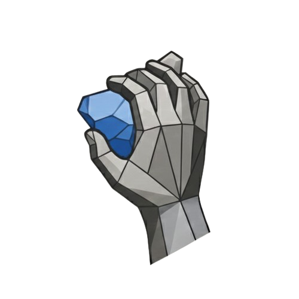

Crimpdeq

Meet Crimpdeq, a portable digital force sensor for climbers, coaches, and therapists to measure and train finger strength, pulling power, and endurance.
- Open-source firmware written in Rust.
- Open-source PCB and 3D printable case design.
- Bluetooth Low Energy communication.
- Works with the Tindeq Progressor and Frez apps on iOS and Android.
Crimpdeq Book
The book includes everything you need to build and use your own Crimpdeq. It covers assembly, calibration, firmware, charging, and PCB details.
Crimpdeq App
The Crimpdeq App lets you connect to, test, and calibrate your Crimpdeq. It is not intended for training. For training sessions, use the Tindeq Progressor or Frez apps.
See the Calibration section in the Book. The app is available on Windows, macOS, Linux, Android, and the web.